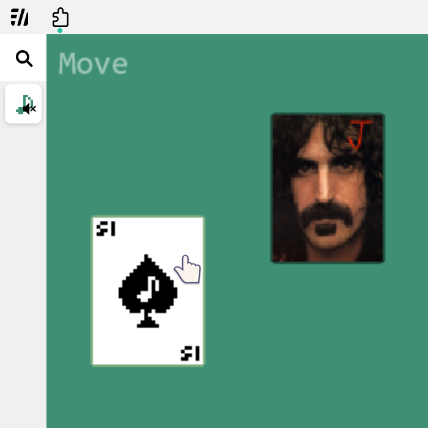

Trump Card Synth
This documentation is about the 20240315 Jihun Park and 20240721 Sihyeon Ju's final project for CTP431 (Fall 2024.)
Running the Project
After cloning the repo, one can start a local web server in the WEB directory. Example of running the project is provided below.
git clone https://github.com/newLivesock/TRUMP_CTP431_final.git
cd TRUMP_CTP431_final/WEB
python3 -m http.server
Adding a New Card
To add a new card, one should press the n key. Then, one can enter the desired card's value and suit (e.g. "3 of hearts") into the prompt.
Edit Modes
This project provides various modes to help editing card placements and connections. Each mode can be accessed by pressing the m, x, c keys respectively.
1. Move [m]
- The default mode, drag and drop cards to organize or reposition them for convenience.

2. Delete [x]
- Select the cards you wish to remove. Lines connected to these cards will be deleted automatically.
3. Connect [c]
- Select the input cards and output cards to create or remove connections.
Note On Connecting
- It is currently not possible to connect from multiple cards into a single card, except for the case where the output card is the Joker.
- Closed loops and self-connections are allowed but will not produce any sound.
Audio Generation
Corresponding Waveforms for Each Suits
- Diamond: Square wave
- Spade: Triangle wave
- Heart: Sawtooth wave
- Clover: Sine wave
Roles of Each Card
1. Root Tone Deciding Card
- Cards directly connected to the Joker will decide root tones.
- Generates the nth note in the tet scale.
- The waveform is determined by the card’s suit.
2. Modulating Card
- Cards connected to the 'root tone deciding cards' will modulate those.
- Produces a modulation wave as input.
- Generates the (n-1)th overtone of the root tone deciding card.
- The waveform is determined by the card’s suit.
3. Joker Card
- Acts as an output stream (similar to
dacin ChucK). - Produces sounds based on the cards connected to it.
Possible Improvements
1. Allow multiple connection to non-Joker cards
- Parsing information from the linked list structure in ChucK makes this challenging.
2. Add Envelope, Filter, etc.
- Enhancements such as envelopes and filters could improve the sound design and usability.